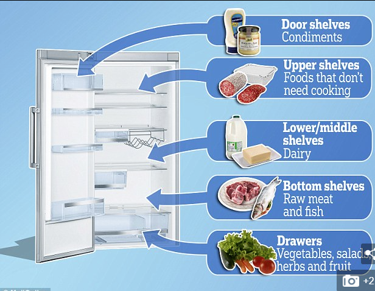

You work for a refrigerator manufacturer. They make many kinds of refrigerators that come in numerous sizes and configurations. In an effort to modernize their company, they have decided to digitize their lineups. To help with prototyping new configurations and features, you have been tasked with laying the foundation for this new system and to implement their first new feature in years, Find My FoodTM. First off, design a data structure to represent various fridge configurations and the items of food stored within them. Think of the standard fridge - it may have two outer doors, or it may have three. Open one of the doors and there may be any number of shelves built into the door. Additionally, opening the door will reveal an interior that may be broken up into multiple shelves, and each shelf could be further subdivided. The data structure should be able to account for all these possibilities. To implement Find My FoodTM, write a method that takes the name of a food item as its input and returns the path to that item in the fridge. So for example, “milk” might return “right door, 2nd shelf”. Or “gouda” might return “right door, 3rd shelf, meet and cheese drawer, cheese side”. To be clear, we are looking for a data structure that can be used to represent various fridge configurations, and a method, findMyFood(), that uses the data structure to return a path to the item of food.